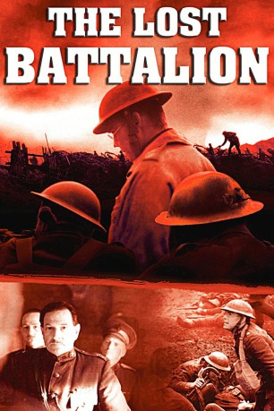

#9784 Zwischen allen Linien - Das verlorene Bataillon
Alternativ: Lost Battalion
 
 IMDB-Wertung: 7.1 / 10
IMDB-Wertung: 7.1 / 10  Metascore: 0
Metascore: 0 
Ende des Ersten Weltkriegs bekommt die Einheit von Major Charles Whittlesey den Auftrag, eine strategisch wichtige Stellung einzunehmen. Doch alles läuft schief. Die versprochene Verstärkung und der Nachschub werden von den Deutschen zurückgeschlagen und so sieht sich der Major mit einem Haufen von jungen Iren und Italo-Amerikanern vom deutschen Heer umzingelt. Gefangen zwischen den Fronten, haben sie zwei Möglichkeiten: aufgeben oder sterben. Sie tun keins von beidem!
Jahr: 2001
Dauer: 91 Minuten
FSK: 16
Land: USA Studio: A&E Television NetworksTonspuren: DTS - ,
Untertitel:
Auflösung: 1080p (1920x1080) Größe: 6727 MB
Genre: Action, Drama, Krieg
Regisseur: Russell Mulcahy
Drehbuch: James Carabatsos
Soundtrack: Richard Marvin
Darsteller:
- Ricky Schroder als Maj. Charles White Whittlesey
 Phil McKee als Capt. George McMurtry
Phil McKee als Capt. George McMurtry Jamie Harris als Sgt. Gaedeke
Jamie Harris als Sgt. Gaedeke- Jay Rodan als Lt. Leak
 Adam James als Capt. Nelson Holderman - Co. K, 307th
Adam James als Capt. Nelson Holderman - Co. K, 307th Daniel Caltagirone als Pvt. Phillip Cepeglia
Daniel Caltagirone als Pvt. Phillip Cepeglia- Michael Goldstrom als Pvt. Jacob Rosen
- André Vippolis als Pvt. Lipasti - Runner
- Justin Scot als Pvt. Omer Richards - Carrier Pigeons
 Anthony Azizi als Pvt. Nat Henchman
Anthony Azizi als Pvt. Nat Henchman Wolf Kahler als Gen. von Sybel
Wolf Kahler als Gen. von Sybel Joachim Paul Assböck als Maj. Henrich Prinz
Joachim Paul Assböck als Maj. Henrich Prinz Michael Brandon als Gen. Robert Alexander
Michael Brandon als Gen. Robert Alexander- Josh Cohen als Pvt. Isidore Swersky
- Tim Matthews als Lt. Schenck
- Finbar Lynch als Pvt. Ferguson
- Hugh Fraser als Gen. DeCoppet
- Derek Kueter als Maj. Wanvig
- Nicolas de Pruyssenaere als Blind Soldier in Line (uncredited)
- Jamie Treacher als The Unknown Soldier (uncredited)
- Rhys Miles Thomas als Pvt. Bob Yoder - Sharpshooter
- Arthur Kremer als Pvt. Abraham Krotoshinsky
- Adam Kotz als Col. Johnson
- George Calil als Pvt. Lowell R. Hollingshead
- Paul Courtenay Hyu als Pvt. Stanley Chinn
- Ben Andrews als Lt. Harold Goettler
Datei: X:\2001\Zwischen allen Linien - Das verlorene Bataillon (2001, FSK16, 1920x1080).mkv seit 28.10.2018
Festplatte: HD 1996-2002
 Es gibt insgesamt 102 Filme in der Gruppe '2001'
Es gibt insgesamt 102 Filme in der Gruppe '2001'